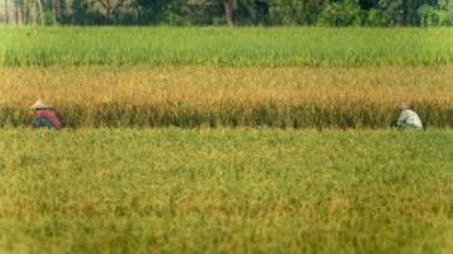
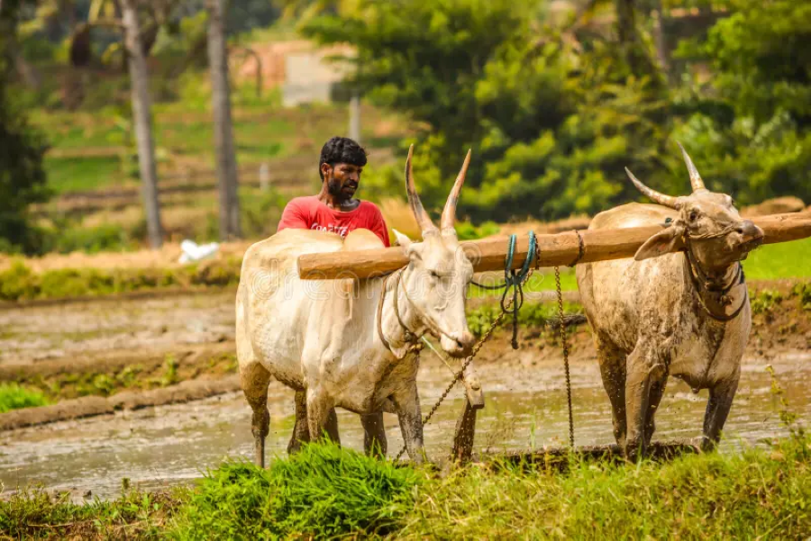

India is predominantly an agricultural country, and the backbone of this agrarian economy is the Indian farmer.
With over half of the population relying directly or indirectly on agriculture for their livelihood, farmers are
the true guardians of the nation’s food security. They toil relentlessly from sunrise to sunset, transforming
barren lands into lush green fields, ensuring that the country’s 1.4 billion people have food on their tables.
Their commitment to their land and the nation is unparalleled, rightfully earning them the title of 'Annadata'

